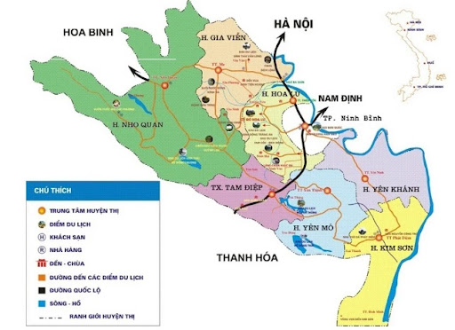
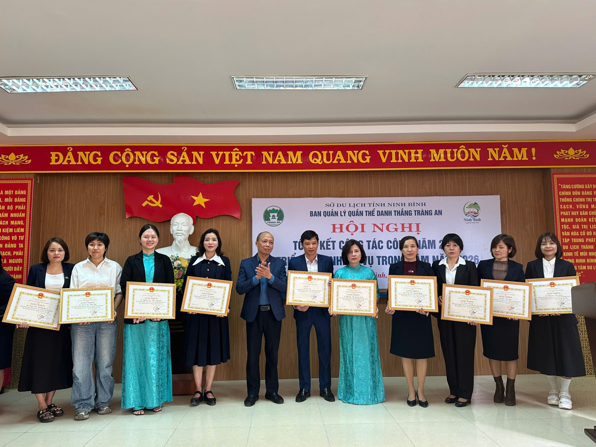

寧平省長安名勝群管理局之管理職能與內容
長安名勝群作為越南唯一的世界文化與自然雙重遺產，其管理工作受到越南政府、文化體育與觀光部以及聯合國教科文組織（UNESCO）的高度關注。
景觀完整性： 嚴格管控劃定的核心區與緩衝區，禁止任何破壞原始地質結構或生態環境的非法建設。
考古保全： 對史前人類遺址及丁、前黎朝時期的歷史遺跡進行常態化監測與科學維護。
航道管理： 統一調配與管理數千艘木船，確保水路交通有序，避免擁擠與事故。
價格監管： 嚴格執行門票與服務費用的公示制度，嚴厲打擊拉客、糾纏遊客或收費不透明之行為。
從業人員培訓： 負責對當地數千名船夫進行外語基本溝通、歷史文化知識及水上救生技能的培訓。
3. 安全、安保與環境監測 (安全、安保與環境監測)
遊客安全： 確保所有船隻配備足額救生設備，並在雨季或極端天氣下實施預警與停航機制。
治安維持： 配合當地公安部門，建立旅遊景區的安全防護網，保障國內外遊客的財產與人身安全。
環境衛生： 推行綠色旅遊，定期進行河道清理與生物多樣性監測，維持「無煙景區」的標準。
4. 社區發展與利益平衡 (社區發展與利益平衡)
民生保障： 實施「社區參與遺產管理」模式，優先錄用當地居民參與景區服務，落實遺產保護與民生改善並重。
三、 行政層級架構 (行政層級架構)
層級 管理機關 職責
中央層級 文化體育與觀光部 負責宏觀規劃、法律框架及對接國際組織 (UNESCO)。
省級層級 寧平省人民委員會 / 旅遊局 負責行政決策、資源配置與直接主管。
執行層級 長安名勝群管理局 負責現場執法、技術監測及日常運作管理。
企業夥伴 春城建設企業 負責基礎設施投資與旅遊開發經營（受政府監管）。
四、 常用術語對照 (常用術語對照)

